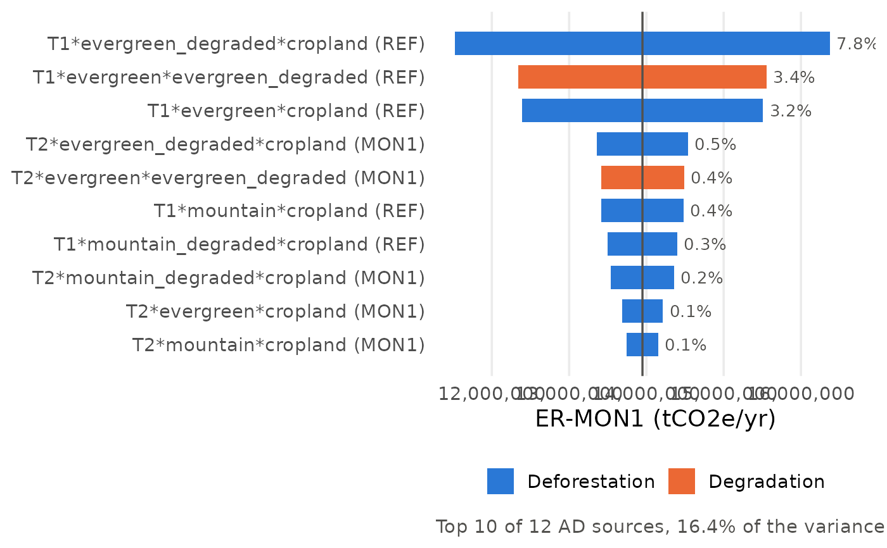

Plot the AD tornado of fct_sensitivity2() for one output:
each bar is the output value when one AD source goes from
\(mean - z \cdot se\) to \(mean + z \cdot se\), all other inputs
at their mean. Bars are sorted by swing; labels give the share of
the output variance (first-order).
Arguments
- .ad_tornado
The
ad_tornadotable offct_sensitivity2().- .output
Output to plot, e.g. "ER-MON1" (see
fct_sensitivity2()).- .top_n
Number of AD sources shown.
Examples
path <- system.file("extdata/mocaredd-templatev2-simple.xlsx", package = "mocaredd.dev2")
checked <- fct_checkinput(.path = path)
#> Loading data... - progress: 0%.
#> ✓ Tables loaded successfully from template v2
#> Checking column names... - progress: 14%.
#> ✓ Column names: all required columns present
#> Checking table dimensions... - progress: 29%.
#> ✓ Table sizes: all tables have sufficient rows
#> Checking column data types... - progress: 43%.
#> ✓ Data types: all columns have correct data types
#> Checking category values... - progress: 57%.
#> ✓ Category values: all categories are valid
#> Checking unique IDs... - progress: 71%.
#> ✓ Unique IDs: no duplicates or missing IDs found
#> Checking cross-table and intra_table consistency... - progress: 86%.
#> ✓ Cross-table consistency: all references match
#> -- All checks passed.
sa <- fct_sensitivity2(.checked_data = checked)
fct_tornado(sa$ad_tornado, .output = "ER-MON1", .top_n = 10)
